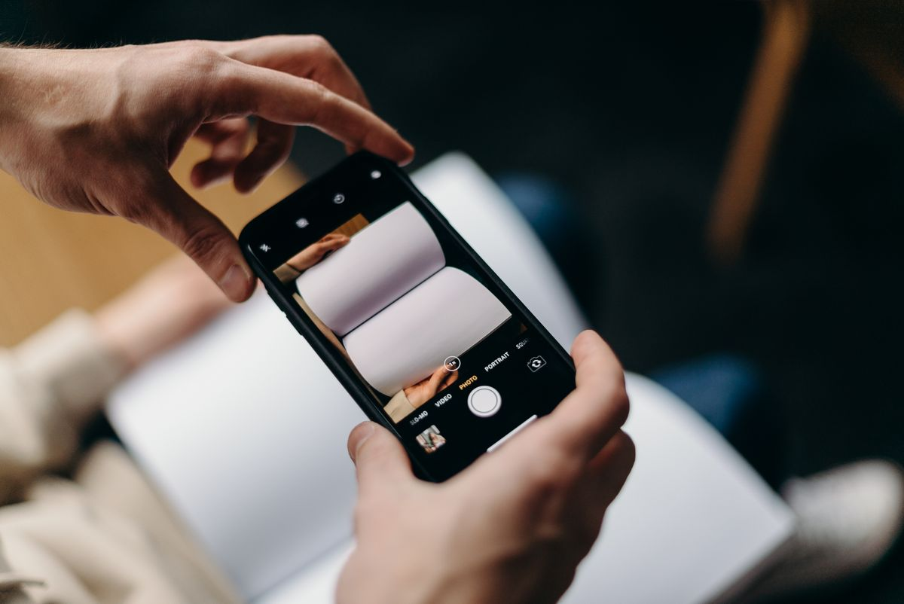

Kamu diminta mengirim scan ijazah, KTP, atau formulir yang sudah ditandatangani, tapi kamu tidak punya mesin scanner dan tempat fotokopi jauh dari rumah. Selama ini jalan pintasnya memotret kertas itu seperti foto biasa, dan hasilnya sering miring, ada bayangan tangan, dan tepi kertas ikut kefoto. Padahal HP kamu sebenarnya sudah punya scanner bawaan yang gratis: di Android fiturnya ada di aplikasi Google Drive, di iPhone ada di aplikasi Notes. Hasilnya langsung jadi PDF rapi yang siap kamu kirim.
Artikel ini menjelaskan cara scan dokumen di HP untuk Android dan iPhone, langkah demi langkah, mengikuti panduan resmi Google dan Apple per Oktober 2026. Kamu tidak perlu memasang aplikasi scanner tambahan dan tidak perlu berlangganan apa pun.
Bedanya scan bawaan dengan foto biasa
Mode scan tidak sekadar mengambil foto. Di Google Drive, saat kamera kamu arahkan ke dokumen, garis biru menandai tepi dokumen dan menunjukkan bagian yang akan dipotong. Di Notes iPhone, mode Auto mengambil gambar sendiri begitu tepi halaman terdeteksi, dan kamu bisa menggeser sudut bingkainya sesudah itu bila garisnya kurang pas. Beberapa halaman bisa kamu pindai berurutan lalu tersimpan sebagai satu berkas PDF, bukan foto terpisah yang harus kamu kirim satu satu. Khusus hasil scan Google Drive, Google menyebut berkasnya tersimpan sebagai PDF yang teksnya bisa dicari, jadi dokumen lama lebih gampang kamu temukan lagi lewat kolom pencarian Drive.
Cara scan dokumen di Android pakai Google Drive
Google Drive biasanya sudah terpasang di HP Android. Buka aplikasinya dan masuk dengan akun Google kamu, lalu ikuti urutan ini:
- Ketuk tombol Camera di kanan bawah halaman utama Google Drive.
- Arahkan kamera ke dokumen sampai garis biru mengitari tepi kertasnya.
- Ambil foto dokumennya. Kamu bisa memilih pengambilan otomatis atau manual, sesuaikan dengan yang lebih nyaman buat kamu.
- Sesuaikan hasil pindaiannya bila perlu, misalnya memotong tepi atau memutar halaman yang terbalik. Tambahkan halaman berikutnya dari menu yang tersedia bila dokumenmu lebih dari satu halaman.
- Ketuk Done sesudah halaman terakhir selesai kamu pindai.
- Buat nama berkas sendiri atau pakai judul yang disarankan.
- Pilih format .pdf supaya hasilnya satu berkas PDF, lalu ketuk Location bila kamu mau memilih folder simpan tertentu.
- Ketuk Save. Berkasnya tersimpan di Google Drive dan bisa kamu bagikan atau kamu unduh lagi dari perangkat lain.
Kalau kamu sering memindai, Google menyediakan widget Drive scan yang bisa kamu pasang di layar utama. Dengan widget itu kamu bisa mulai memindai tanpa membuka aplikasinya dulu, dan folder simpanannya bisa kamu tentukan sejak awal.
Cara scan dokumen di iPhone pakai Notes
Di iPhone, pemindainya ada di aplikasi Notes dan hasil pindaiannya tersimpan di dalam catatan. Caranya begini:
- Buka Notes, lalu buat catatan baru atau buka catatan yang sudah ada.
- Ketuk tombol lampiran, lalu pilih Scan Documents.
- Letakkan dokumen di depan kamera. Bila HP kamu dalam mode Auto, dokumen akan terpindai sendiri begitu tepinya terdeteksi.
- Bila kamu mau mengambilnya manual, ketuk tombol Shutter atau tekan salah satu tombol volume.
- Seret sudut bingkai supaya pas dengan tepi halaman, lalu ketuk Keep Scan.
- Pindai halaman berikutnya bila ada, lalu ketuk Save sesudah halaman terakhir.
Sesudah tersimpan, buka hasil pindaiannya dari catatan itu untuk membagikannya sebagai PDF ke aplikasi lain. Nama tombol bisa sedikit berbeda mengikuti versi iOS di HP kamu, tapi urutan dasarnya sama seperti di atas.

Tips supaya hasil scan kamu jelas dan diterima
- Letakkan kertas di permukaan rata dengan warna yang kontras, misalnya kertas putih di atas meja gelap, supaya tepi dokumen gampang dideteksi kamera.
- Pakai cahaya ruangan yang terang dan merata. Usahakan bayangan tanganmu tidak jatuh di atas tulisan, dan hindari flash untuk kertas mengilap karena pantulannya bisa menutupi teks.
- Pegang HP sejajar dengan kertas, jangan miring dari samping. Mode scan memang meluruskan hasilnya, tapi posisi awal yang terlalu miring tetap menurunkan ketajaman.
- Sesudah memindai, perbesar hasil PDF dan baca satu halaman penuh. Bila ada tulisan yang buram, pindai ulang halaman itu saja selagi kertasnya masih ada di depanmu.
- Untuk dokumen resmi seperti ijazah dan formulir bertanda tangan, hindari filter pembersih yang berlebihan. Pastikan stempel, tanda tangan, dan nomor dokumen tetap terlihat persis seperti aslinya.
- Beri nama berkas yang jelas sebelum mengirim, misalnya jenis dokumen dan namamu, supaya penerima tidak perlu menebak isi berkasnya.
Kalau PDF hasil scan terlalu besar untuk diunggah
Kadang portal pendaftaran membatasi ukuran berkas, dan PDF beberapa halaman hasil scan bisa melewati batas itu. Kamu tidak perlu memindai ulang dari awal, cukup kecilkan berkas yang sudah jadi. Caranya sudah dibahas lengkap di artikel kompres PDF di rubrik ini, tautannya ada di bagian Baca juga di bawah.
Intinya
Cara scan dokumen di HP tidak butuh mesin scanner dan tidak butuh aplikasi berbayar. Di Android, buka Google Drive, ketuk Camera, arahkan kamera ke dokumen sampai garis biru pas, lalu simpan sebagai PDF. Di iPhone, buka Notes, pilih Scan Documents dari tombol lampiran, dan simpan pindaiannya dari catatan itu. Periksa hasilnya sekali dengan memperbesar halamannya, beri nama berkas yang jelas, dan dokumenmu siap dikirim per Oktober 2026 ini juga.
← Kembali ke Other